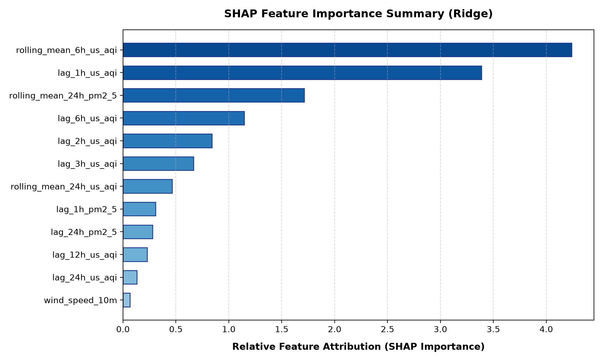

10Pearls MLOps Engineering Deliverable | Evaluation Timestamp: September 06, 2026 - 17:48 UTC
The Pearls AQI Predictor is an autonomous, production-grade MLOps system delivering reliable hourly Air Quality Index (AQI) forecasts up to 72 hours in advance using Open-Meteo telemetry and machine learning pipelines with zero-crash local/Hopsworks fallbacks.
| Model Architecture | Test MAE | Test RMSE | Test R² Score | Status |
|---|---|---|---|---|
| Ridge | 0.202 | 0.273 | 0.9921 | 🏆 Champion |
| Random_Forest | 0.477 | 0.736 | 0.9424 | Evaluated |
| TensorFlow_DNN | 5.713 | 6.798 | -3.9154 | Evaluated |
Top feature attribution factors influencing the model predictions:
rolling_mean_6h_us_aqi (Score: 4.2388)lag_1h_us_aqi (Score: 3.3888)rolling_mean_24h_pm2_5 (Score: 1.7127)lag_6h_us_aqi (Score: 1.1470)lag_2h_us_aqi (Score: 0.8411)lag_3h_us_aqi (Score: 0.6676)rolling_mean_24h_us_aqi (Score: 0.4657)lag_1h_pm2_5 (Score: 0.3085)
| AQI Range | Category | Advisory |
|---|---|---|
| 0 – 50 | Good | Air quality is satisfactory; enjoy normal outdoor activities. |
| 51 – 100 | Moderate | Air quality is acceptable; sensitive groups monitor exertion. |
| 101 – 150 | Unhealthy for Sensitive | Sensitive individuals reduce outdoor activity. |
| 151 – 200 | Unhealthy | Wear N95 masks outdoors, keep windows closed, run HEPA filtration. |
| 201 – 300 | Very Unhealthy | Health alert: Avoid all outdoor activity; stay in filtered rooms. |
| 301 – 500 | Hazardous | Emergency conditions: Remain indoors and minimize physical exertion. |
# Quickstart
git clone https://github.com/10pearls/aqi-predictor.git
cd aqi-predictor
python3 -m venv .venv && source .venv/bin/activate
pip install -r requirements.txt
python 1_feature_pipeline.py --city Karachi
python 2_training_pipeline.py --city Karachi
python audit_submission.py
streamlit run 3_app.py